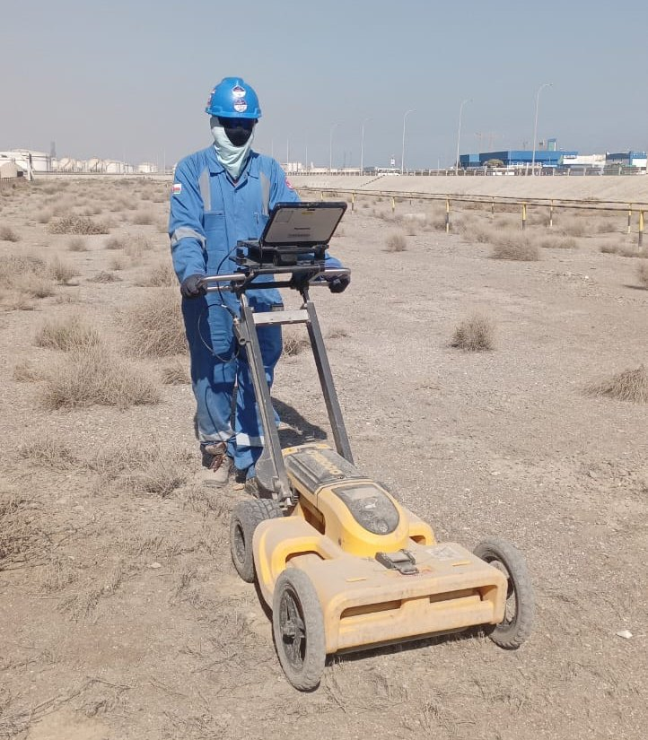
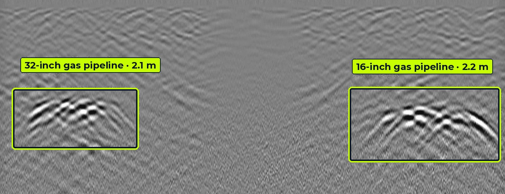

Non-destructive investigation, geophysics and survey
Six service lines delivered by one team, from buried utility mapping to railway track-bed assessment and 3D site capture.
GPR survey for utility detection
Striking a live cable or water main stops work, costs money and puts crews at risk. We scan the ground with Leica dual-frequency GPR, locate metallic services with electromagnetic locators, and combine both into a utility map with depths before you dig.
What we find
- Water, sewer and storm pipes
- Power and telecom cables
- Gas and oil pipelines
- Unrecorded and abandoned services
What you receive
- Marked-up services on the ground
- CAD / GIS utility drawings (QL-B)
- Depth estimates at regular chainages
- Survey report with risk notes and recommended trial pits


| Frequency | Typical depth | Best for |
|---|---|---|
| 700 MHz | 0 – 1.5 m | Shallow cables, small ducts, telecom |
| 250 MHz | 0 – 4 m | Water mains, sewers, deeper pipelines |
Leica DS2000 dual-frequency antenna. Depth depends on soil type and moisture.
GPR survey for railway ballast investigation
We couple a 2 GHz antenna and a 400/900 MHz dual-frequency antenna to a rail vehicle and survey along the route. Continuous data, tied to chainage and GNSS position, shows how ballast depth and condition change along every kilometre, so maintenance budgets go where the track actually needs them.
What we find
- Ballast thickness and depth
- Fouled ballast and fouling index trends
- Sub-ballast and formation layers
- Water pockets, mud pumping and weak spots
What you receive
- Chainage-wise ballast profiles
- Colour-coded track condition strip maps
- Priority list for cleaning and renewal
- GIS layers for asset management


| Antenna | Typical depth | What it shows |
|---|---|---|
| 2 GHz | 0 – 0.6 m | Ballast surface layer, sleeper zone, fine fouling |
| 900 MHz | 0 – 1.2 m | Ballast / sub-ballast interface, ballast pockets |
| 400 MHz | 0 – 2.5 m | Formation, subgrade, trapped water and mud pumping |
Depths are typical and depend on material and moisture.
Structural scanning with 2 GHz GPR
Before you core, drill or cut concrete, a 2 GHz scan shows what is inside. We mark reinforcement and embedded services directly on the surface and deliver slice maps for retrofit and assessment work.
What we find
- Rebar layout, spacing and cover
- Post-tension cables and conduits
- Slab and wall thickness
- Voids, honeycombing and delamination
What you receive
- On-surface markings for safe coring
- Depth-slice images and plan maps
- Cover depth tables
- Assessment report


Consultant for GPR-related works
GPR gives accurate results only when the survey is designed properly and the data is read by someone who understands the physics. As consultants we work for owners, contractors and PMCs to make sure the GPR on their project answers the right question.
With an experienced consultant, depth errors are reduced, false targets are removed, and disputes over missed services are avoided.
What we find
- Unclear or conflicting GPR results
- Wrong antenna or grid for the target
- Depths not calibrated to soil
- Missing QA on third-party data
What you receive
- Survey specifications and tender scope
- Method statements and QA plans
- Independent review of GPR data and reports
- Training for site and client teams

ERT, SRT and MASW surveys
ERT (electrical resistivity tomography) images how the ground conducts current, which reveals groundwater, clay, rock and cavities. SRT (seismic refraction tomography) maps P-wave velocity layers for bedrock depth and rippability. MASW (multichannel analysis of surface waves) gives shear-wave velocity profiles and Vs30 for seismic site classification.
What we find
- Depth to bedrock and weathered zones
- Groundwater and saturated layers
- Cavities, fractures and weak zones
- Vs30 and soil stiffness for design
What you receive
- 2D resistivity and velocity sections
- Vs profiles and site class
- Interpreted geological cross-sections
- Recommendations for boreholes


Topographic survey and 3D laser scanning
Accurate ground levels and as-built geometry complete the picture. We carry out topographic surveys and capture buildings, plants, tunnels and corridors with a handheld 3D laser scanner, which records millions of points as you walk through the site.
What we find
- Ground levels, contours and features
- As-built geometry of plants and buildings
- Tunnels, shafts and confined spaces
- Clash risks for new work
What you receive
- Topographic drawings (CAD)
- Registered point clouds
- 3D models and BIM inputs
- Utility maps overlaid on topography